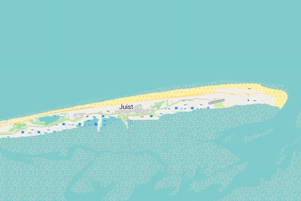
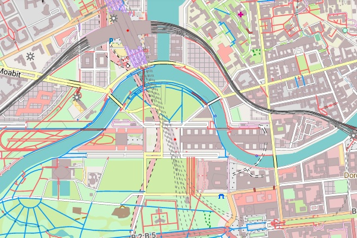

Die Freizeitkarten richten sich an Nutzer von Android-Geräten. Die Offline-Vektor-Karten basieren auf den Projekten OpenStreetMap und Mapsforge und können zusammen mit verschiedenen Android-Karten-Apps (z.B. Locus Map, OruxMaps, c:geo, CacheBox, ...) benutzt werden.

Juist - Insel im Watt.
Die Freizeitkarten basieren auf den Daten des OpenStreetMap-Projektes und sind als Universalkarten entwickelt, für
- die Freizeit
- und bei Outdoor-Aktivitäten.
Eigenschaften der Karte:
- Autofahrer, Radfahrer und Fußgänger haben den gleichen Stellenwert
- topografische Karte mit integrierten Höhenlinien (Äquidistanz 25 Meter)
- alle Kartenelemente können einzeln sichtbar / unsichtbar gemacht werden
Für die hier verfügbare Karte gilt:
- es werden die öffentlichen und aktuellen Basisdaten des OpenStreetMap-Projektes verwendet
- die Kartendarstellung lehnt sich an das Look & Feel der OpenStreepMap-Karte an
- die Karten sind kostenlos und können privat uneingeschränkt verwendet werden (s.a. Lizenzbedingungen)
- die Karte wird regelmäßig (alle zwei Monate) aktualisiert

Berlin - mit über 3.5 Million Einwohner die mit Abstand größte deutsche Stadt.
Nutzungsbedingungen:
Die Nutzung des Kartenmaterials erfolgt auf eigene Gefahr. Das Kartenmaterial kann Fehler enthalten oder unzureichend sein. Die Ersteller dieser Karte übernehmen keinerlei Gewährleistung oder Haftung für Schäden die direkt oder indirekt durch die Nutzung des Kartenmaterials entstehen.
Viel Freude an den Freizeitkarten ... und viele interessante Touren damit.